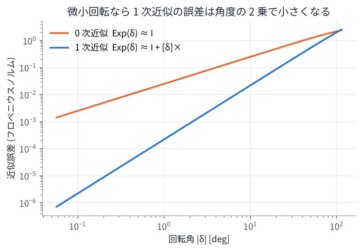
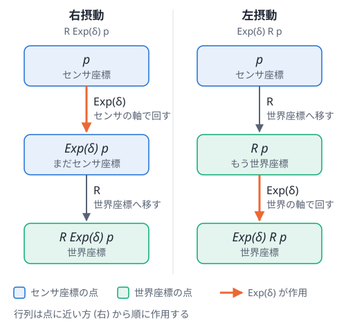

01. 座標と回転 (SO(3), SE(3), Lie 群)
この章のゴール
- センサの「姿勢 (pose)」を回転行列と並進ベクトルで表し、点の座標変換ができる
- 相対姿勢 \(\mathbf{T}_i^{-1}\mathbf{T}_j\) の意味が分かる
- 回転は普通のベクトルのように足し算できないこと、そのために Lie 群の道具 (Exp / Log) を使うことが分かる
- 「微小回転を掛ける」ことでヤコビアンを求める方法 (摂動) が分かる
論文とのつながり 論文の状態 \(\mathbf{x}_i\) には 6 自由度の姿勢が含まれます。スキャンマッチング因子 \(f^P(\mathbf{x}_i, \mathbf{x}_j)\) は 「フレーム j の点群を、相対姿勢でフレーム i の座標に移して比べる」ものですし、 最適化 (ガウス・ニュートン法) では姿勢に「微小な更新量」を足していく必要があります。 この章の内容はすべての因子の土台です。
1. 姿勢 = 位置 + 向き
3 次元空間の剛体の姿勢は、位置 3 自由度 + 向き 3 自由度 = 6 自由度 (6DoF) で表せます。 論文タイトルの「6DoF 姿勢推定」はこれのことです。
- 位置: 並進ベクトル \(\mathbf{t} \in \mathbb{R}^3\)
- 向き: 回転行列 \(\mathbf{R} \in SO(3)\)
回転行列は \(3 \times 3\) の行列ですが、次の条件を満たすものだけが「回転」です。
この条件を満たす行列全体を SO(3) (3 次元の特殊直交群) と呼びます。 9 個の数字を持っていますが、条件のせいで自由に動かせるのは 3 自由度だけです。
2. 座標変換と同次変換行列
センサ (LiDAR) が観測した点 \(\mathbf{p}\) はセンサの座標系で表されています。 センサの姿勢が \((\mathbf{R}, \mathbf{t})\) のとき、その点の世界座標は
です。これを 4×4 の 同次変換行列 でまとめると、掛け算 1 回で書けて便利です。
このような行列全体を SE(3) (3 次元の特殊ユークリッド群) と呼びます。
合成と逆変換
- 合成: 変換を続けて行うのは行列の掛け算 \(\mathbf{T}_a \mathbf{T}_b\)
- 逆変換: 回転行列の逆は転置で済むので、次のように簡単に計算できる
名前の付け方のコツ: T_world_sensor
著者のコード (GLIM など) では T_world_imu のような変数名がよく出てきます。
これは「imu 座標系の点を world 座標系に移す変換」という意味です。
添字を「左 ← 右」と読むと、合成が正しいかを目で確認できます。
(内側の添字 imu が打ち消し合っている)
相対姿勢
世界座標での姿勢 \(\mathbf{T}_i, \mathbf{T}_j\) から、フレーム j の座標をフレーム i の座標に移す変換 は
です。論文のスキャン間マッチング因子は、まさにこの \(\mathbf{T}_{ij}\) でフレーム j の点をフレーム i に移して 比べています (03 章)。
3. 回転の表し方いろいろ
| 表現 | 数字の個数 | 長所 | 短所 |
|---|---|---|---|
| 回転行列 | 9 | 合成・点の変換が掛け算で簡単 | 冗長。誤差が溜まると直交性が崩れる |
| オイラー角 (roll, pitch, yaw) | 3 | 人間に分かりやすい | ジンバルロック (特異点) がある。合成が面倒 |
| 四元数 (クォータニオン) | 4 | コンパクトで特異点なし。数値的に安定 | 直感的でない。q と -q が同じ回転 |
| 回転ベクトル (軸 × 角度) | 3 | 最小の 3 個。微小回転の表現に最適 | 合成は直接できない (Exp/Log を経由) |
最適化では「姿勢そのものは回転行列 (や四元数) で持ち、更新量は回転ベクトルで表す」のが定番です。 GTSAM もこの方式です。
4. 回転は足し算できない → Lie 群の考え方
ガウス・ニュートン法では「今の推定値 + 更新量」を繰り返します。 しかし回転行列に普通に行列を足すと、\(\mathbf{R}^\top\mathbf{R} = \mathbf{I}\) が崩れて回転行列でなくなってしまいます。
そこで、
- 更新量は 3 次元の 回転ベクトル \(\boldsymbol{\delta} \in \mathbb{R}^3\) で表す (これは自由に足し引きできる)
- それを 指数写像 Exp で回転行列に直す
- 掛け算で今の回転に合成する
という手順を踏みます。
hat 演算子と指数写像
回転ベクトル \(\boldsymbol{\omega} = (\omega_x, \omega_y, \omega_z)\) から作る歪対称行列を \([\boldsymbol{\omega}]_\times\) と書きます (hat 演算子)。
指数写像は、回転角 \(\theta = \lVert\boldsymbol{\omega}\rVert\)、回転軸 \(\mathbf{a} = \boldsymbol{\omega}/\theta\) として ロドリゲスの公式 で計算できます。
逆向きの 対数写像 Log は回転行列から回転ベクトルを取り出します。
イメージとしては、SO(3) は「曲がった空間 (多様体)」で、その 1 点に接する平らな空間 (接空間, 3 次元) の上で 計算してから Exp で曲がった空間に戻している、という感じです。
微小回転の近似
\(\boldsymbol{\delta}\) が小さいときは
と近似できます。演習 1 の図で、この近似の誤差が角度の 2 乗で小さくなることを確かめられます。

5. 摂動 (perturbation) でヤコビアンを求める
最適化には「状態を少し動かしたとき、誤差がどれだけ変わるか (ヤコビアン)」が必要です。 回転を少し動かすことを「\(\mathbf{R}\) に右から \(\operatorname{Exp}(\boldsymbol{\delta})\) を掛ける」と定義すると、 計算がとても簡単になります。
例として、点を回転させる関数 \(f(\mathbf{R}) = \mathbf{R}\mathbf{p}\) を考えます。
したがって
です。最後の変形では外積の性質 \(\boldsymbol{\delta}\times\mathbf{p} = -\mathbf{p}\times\boldsymbol{\delta}\) を使いました。
GLIM の論文 (RAS 2024) に出てくる VGICP 因子のヤコビアン \(\mathbf{A}_k = [\,\mathbf{R}_{ij}[\boldsymbol{\mu}_k]_\times,\ -\mathbf{R}_{ij}\,]\) なども、この計算の応用です (符号は誤差の定義の向きで変わります)。
右摂動と左摂動: δ はどの座標系の回転か
ここまでは「\(\mathbf{R}\) に 右から \(\operatorname{Exp}(\boldsymbol{\delta})\) を掛ける」と決めて計算しました。 実は 左から 掛ける流儀もあり、文献によってどちらも使われます。
どちらも「\(\mathbf{R}\) の近くの回転」を表せますが、同じ \(\boldsymbol{\delta}\) でも意味する回転が違います。
- 右摂動の \(\boldsymbol{\delta}\) は、センサ座標系の軸 (センサの前・左・上) まわりの回転
- 左摂動の \(\boldsymbol{\delta}\) は、世界座標系の軸 (地図の x・y・z) まわりの回転
なぜそうなるのかを、3 つの見方で説明します。 前提として、この章の \(\mathbf{R}\) は「センサ座標の点を世界座標に移す回転」(\(\mathbf{R}_{\text{world}\leftarrow\text{sensor}}\)) です。
理由 1: 点に掛ける順番を追う
回転を点 \(\mathbf{p}\) (センサ座標) に作用させると、行列は 点に近い方、つまり右から順に 作用します。 大事なのは、\(\operatorname{Exp}(\boldsymbol{\delta})\) が作用する瞬間に、点がどの座標系で表されているかです。

- 右摂動: \(\operatorname{Exp}(\boldsymbol{\delta})\) が作用するとき、点はまだセンサ座標で表されています。 センサ座標の中で「x 軸まわりに回す」と言えば、それはセンサの x 軸 (例えばロボットの前方向) まわりです。 回し終わってから \(\mathbf{R}\) で世界に移すので、\(\boldsymbol{\delta}\) の軸はセンサの軸になります。
- 左摂動: 先に \(\mathbf{R}\) で世界座標に移してから \(\operatorname{Exp}(\boldsymbol{\delta})\) が作用します。 世界座標の中で「x 軸まわりに回す」と言えば、それは地図の x 軸まわりです。
行列 \(\operatorname{Exp}(\boldsymbol{\delta})\) そのものは同じでも、作用する相手 (点) がどちらの座標系で書かれているか で、軸の意味が変わるのです。
理由 2: 添字のルールで確かめる
2 節の「添字を左 ← 右と読む」ルールでも確かめられます。\(\mathbf{R} = \mathbf{R}_{\text{w}\leftarrow\text{s}}\) (w = 世界, s = センサ) です。
- 右摂動 \(\mathbf{R}_{\text{w}\leftarrow\text{s}}\operatorname{Exp}(\boldsymbol{\delta})\): \(\operatorname{Exp}(\boldsymbol{\delta})\) は右隣の添字 s とつながる必要があるので、「s の座標 → s の座標」の変換です。 入力も出力もセンサ座標なので、これは センサ座標系の中での回転 です。
- 左摂動 \(\operatorname{Exp}(\boldsymbol{\delta})\,\mathbf{R}_{\text{w}\leftarrow\text{s}}\): \(\operatorname{Exp}(\boldsymbol{\delta})\) は左隣の添字 w の後に来るので、「w の座標 → w の座標」の変換、 つまり 世界座標系の中での回転 です。
理由 3: 具体例で、同じ δ が別の動きになるのを見る
ロボットが地図の上で 左に 90° 向いている (yaw = 90°) とします。センサ座標は x = 前、y = 左、z = 上 です。
\(\mathbf{R}\) の各列は、センサの x, y, z 軸を世界座標で表したものです。したがって
- センサの前 (x 軸) は、世界の +y 方向を向いている (1 列目 = (0, 1, 0))
- センサの左 (y 軸) は、世界の −x 方向を向いている (2 列目 = (−1, 0, 0))
ここに \(\boldsymbol{\delta} = (0.1,\ 0,\ 0)\) (「x 軸まわりに 0.1 rad」) を加えます。
| 右摂動 R Exp(δ) | 左摂動 Exp(δ) R | |
|---|---|---|
| 軸 | センサの x 軸 = ロボットの前 | 世界の x 軸 = ロボットの右 |
| 動き | ロール (左側が持ち上がる) | ピッチ (機首が上がる) |
| 前方向 | (0, 1, 0) のまま | (0, 0.995, 0.100) |
| 左方向 | (−0.995, 0, 0.100) | (−1, 0, 0) のまま |
(前方向・左方向は回転後の向きを世界座標で表したもの。z 成分が正なら上を向いたということ)
同じ \(\boldsymbol{\delta}\) なのに、右摂動ではロール、左摂動ではピッチになります。 ロボットがたまたま世界の x 軸方向を向いていれば (yaw = 0°) 両者は一致しますが、 向きが変わると一致しなくなります。演習 1 の 7 節で、この表の数値を計算して確かめられます。
2 つの関係: 回転軸を座標変換するだけ
右摂動の \(\boldsymbol{\delta}_{\text{s}}\) (センサ座標) と左摂動の \(\boldsymbol{\delta}_{\text{w}}\) (世界座標) が同じ回転を表す、つまり
となるのは、次の関係のときです。
上の具体例なら、\(\boldsymbol{\delta}_{\text{s}} = (0.1, 0, 0)\) (センサの前方向の軸) は \(\boldsymbol{\delta}_{\text{w}} = \mathbf{R}\boldsymbol{\delta}_{\text{s}} = (0, 0.1, 0)\) (世界の y 軸) に対応します。
回転ベクトルは「回転軸の向き × 角度」なので、センサ座標で書いた回転軸を \(\mathbf{R}\) で世界座標に書き直せば、 世界座標で書いた回転軸になる、というだけのことです。 (式としては \(\mathbf{R}[\boldsymbol{\delta}]_\times\mathbf{R}^\top = [\mathbf{R}\boldsymbol{\delta}]_\times\) から導けます。 SE(3) では随伴行列 \(\mathrm{Ad}_{\mathbf{T}}\) が同じ役割をします)
どちらを使うと何が変わるのか
最適化が収束すれば、どちらの流儀でも同じ姿勢が得られます。変わるのは \(\boldsymbol{\delta}\) と、それに関係する量の 表し方 です。
- ヤコビアンの形: \(\partial(\mathbf{R}\mathbf{p})/\partial\boldsymbol{\delta}\) は、右摂動なら \(-\mathbf{R}[\mathbf{p}]_\times\)、左摂動なら \(-[\mathbf{R}\mathbf{p}]_\times\) です。 論文の式をコードに写すとき、流儀を混ぜると形や符号が合わなくなります。
- 共分散の意味: 推定の不確かさ (共分散) も \(\boldsymbol{\delta}\) の座標系で表されます。
GTSAM は右摂動なので、
Pose3の共分散は センサ (ボディ) 座標系 で書かれています。 共分散の「x 方向の分散」は地図の x 方向ではなく、ロボットの前方向の分散です。 地図の座標で見たいときは、回転部分なら \(\mathbf{R}\boldsymbol{\Sigma}\mathbf{R}^\top\) のように変換します。 - IMU との相性: ジャイロはセンサ座標の角速度 \(\boldsymbol{\omega}\) を測るので、姿勢の積分は \(\mathbf{R}_{k+1} = \mathbf{R}_k\operatorname{Exp}(\boldsymbol{\omega}\Delta t)\) と 右から 掛ける形になります (04 章)。 右摂動を使えば、IMU の計測と推定の誤差を同じセンサ座標系で扱えます。GTSAM や多くの LiDAR・IMU の手法が右摂動を使う理由の 1 つです。
論文やコードを読むときは、まず「更新が \(\mathbf{R}\operatorname{Exp}(\boldsymbol{\delta})\) か \(\operatorname{Exp}(\boldsymbol{\delta})\mathbf{R}\) か」を確認しましょう。 それが分かれば、ヤコビアンや共分散がどの座標系で書かれているかも分かります。
6. SE(3) の場合
姿勢全体 \(\mathbf{T}\) も同じように、6 次元の更新量 \(\boldsymbol{\xi} = (\boldsymbol{\delta}_\text{rot}, \boldsymbol{\delta}_\text{trans})\) を使って
\(\mathbf{T} \leftarrow \mathbf{T}\operatorname{Exp}(\boldsymbol{\xi})\) と更新します。
GTSAM の Pose3 は回転 3 成分 → 並進 3 成分の順に並べます (ライブラリによって順番が違うので注意)。
7. 演習で使う 2D 版: SE(2)
演習では計算を簡単にするため、2D の姿勢 \((x, y, \theta)\) を使います。
2D の回転は角度 1 個で表せて、角度は (範囲を \([-\pi, \pi)\) に丸めれば) 足し算できます。 3D の考え方を 2D で練習してから 3D に戻ると理解しやすくなります。
演習 1
python exercises/ex01_rotation.py
- 回転行列の性質、Exp と Log が逆であることを確認
- 回転の合成の順番を入れ替えると結果が変わることを確認
- 解析的に求めたヤコビアン \(-\mathbf{R}[\mathbf{p}]_\times\) と数値微分が一致することを確認
- 相対姿勢 \(\mathbf{T}_i^{-1}\mathbf{T}_j\) で点を変換
- 右摂動と左摂動で、同じ \(\boldsymbol{\delta}\) がロールとピッチという別の動きになることを確認
理解度チェック
- 回転行列が 9 個の数字を持つのに、自由度が 3 なのはなぜ?
- \(\mathbf{T}_i\), \(\mathbf{T}_j\) が世界座標での姿勢のとき、フレーム j で観測した点をフレーム i の座標に移す変換は?
- 最適化の更新で \(\mathbf{R} + \Delta\mathbf{R}\) としてはいけないのはなぜ? 代わりにどうする?
- \(\dfrac{\partial(\mathbf{R}\operatorname{Exp}(\boldsymbol{\delta})\mathbf{p})}{\partial\boldsymbol{\delta}}\) を導出せよ。
- 右摂動 \(\mathbf{R}\operatorname{Exp}(\boldsymbol{\delta})\) の \(\boldsymbol{\delta}\) がセンサ座標系の回転になるのはなぜ?
答えの例
- \(\mathbf{R}^\top\mathbf{R} = \mathbf{I}\) (6 個の独立な条件) があるので、9 − 6 = 3 自由度。
- \(\mathbf{T}_{ij} = \mathbf{T}_i^{-1}\mathbf{T}_j\)。
- 足し算すると直交性が崩れて回転行列でなくなる。回転ベクトル \(\boldsymbol{\delta}\) で更新量を表し、\(\mathbf{R}\operatorname{Exp}(\boldsymbol{\delta})\) と掛け算で更新する。
- \(\operatorname{Exp}(\boldsymbol{\delta}) \approx \mathbf{I} + [\boldsymbol{\delta}]_\times\) を使って \(-\mathbf{R}[\mathbf{p}]_\times\)。
- 点 \(\mathbf{p}\) に作用させると \(\mathbf{R}(\operatorname{Exp}(\boldsymbol{\delta})\mathbf{p})\) となり、\(\operatorname{Exp}(\boldsymbol{\delta})\) は \(\mathbf{R}\) で世界座標に移す 前の、センサ座標で表された点を回すから。左摂動では世界座標に移した 後の 点を回すので、世界座標系の回転になる。
もっと知りたい人へ
- J. Solà, J. Deray, D. Atchuthan, "A micro Lie theory for state estimation in robotics," arXiv:1812.01537, 2018. (Lie 群を「使う側」の視点で短くまとめた定番資料)
- T. D. Barfoot, State Estimation for Robotics, Cambridge University Press. (無料 PDF あり)